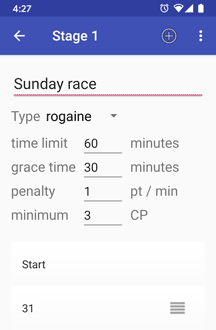

According to the agreement with SFR System manufacturer, to complicate unauthorised base unit programming and competition vandalism, one willing to obtain his first short-term extended license should provide proof of SFR readout unit ownership.
To provide a valid proof, please send an image with "SFR Reader" text and SFR readout unit (sample) to the srgttv@gmail.com.
With NFC turned on, just tap smartphone to the card to read data.
If this does not work, make sure the card is located near the NFC antenna zone. Some devices have it at unexpected places such as top edge.
Tapping against the same card for the second time would show message "The data are already read".
SFR Reader allows setting team/athlete's name to each result it reads.
One can set it manually after each reading operation, or in semiautomatic and even fully automatic way. To speed the process up one can upload list of athletes from a text file (UTF-8 encoded) or SFR Smart Terminal, or SFR Event Centre database, to choose the correct name from the list. If the ahtlete in the list has a card number, then SFR reader would automatically use that name for the card.
You can use Excel or any similar program (Open / Libre Office) to prepare the list and save it as CSV-file.
Sample:// Line starting with 2 slashes is a comment. // The file format is trivial: // One line — one team // These teams should be // chosen manually The Furious Just walking Quantum snails // For the following teams // SFR Reader would use // card #32 for Swamp kids, // and card #34 for John Doe. // Text befor semicolon is a card number, // text after it is a team name. 31;Chasing daylight 32;Swamp kids 33;Humpty Dumpty 34;John Doe 35;Heather Jones 36;Salmon - 1 37;Cheetah - 7
To import list of participants upload file to the smartphone (via e-mail, messenger, USB or Bluetooth) choose "Load teams..." menu item and find uploaded file.
SFR Reader would display the number of uploaded teams and proceed to the teams list or show an error message for ill-formed files.
SFR Reader supports creating, edititng of the courses of different types like regular, rogaine, other scoring type and some mixed variants. To start editing the course choose "Courses" menu item, or just swipe right.
Each course consists of at least one stage (the only one usually). Every stage has a type (regular, rogaine, choice), a set of control points, and some other parameters like time limit, minimum number of control points, late period and late penalty (for rogaine type).
Mixed courses contain several stages of regular and choice types. It's impossible to mix stages of rogaine and other types in one course, since rogaine result is counted in points, while other types use time and number of visited control points.
The first stage may contain "Start" control point, and the last stage — "Finish" control point. In such a case "Start" and "Finish" punches would define athelete's total time. In case there would be no "Start" or "Finish" control points in the course, the first (last) punch at the athelete's card would be used as "Start" ("Finish") punch.
The punches "Start" and "Finish" are not accounted, when validating, whether the athlete visited required number of control points (i.e. athlete with "Start", 31 and "Finish" punches is considered to visit 1 control point, not 3.) The athletes, who visit less control points than stage's minimum (if any), get DSQ result, with a comment "Too few control points".
If there is a course defined, SFR Reader validates each result, and uses it to show and sort results in a proper way.
Result is considered valid, if all stages of the course are passed. The stage is considered passed, if all required CPs are visited (for regular stages — visited in the correct sequence) and stage time limit is not exceeded (exceeded for no more than grace time for rogain stages).
Possible results are OK (all the stages are passed, no time limits are boken) and different variants of DSQ:
For every athlete's card read SFR Reader provides general results: total time, and number of visited CPs (points earned), and details: lists of missed CPs, false CPs visited, duplicate CPs for rogain or other scoring type courses.
If the course is changed somehow: CP is added or removed, time limits or even course type is changed, then SFR Reader would revalidate all stored results.
Some smartphones are known to have very slow NFC data transfer (1-2 seconds per 1 punch, instead of regular 30-100 msec).
The problem models are:
 SFR Reader
SFR Reader{kind=link}